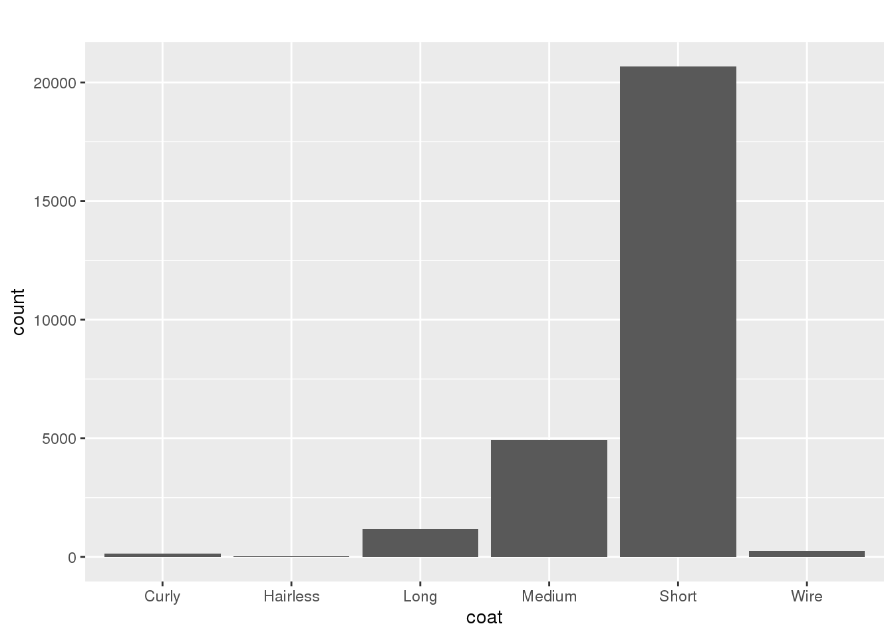
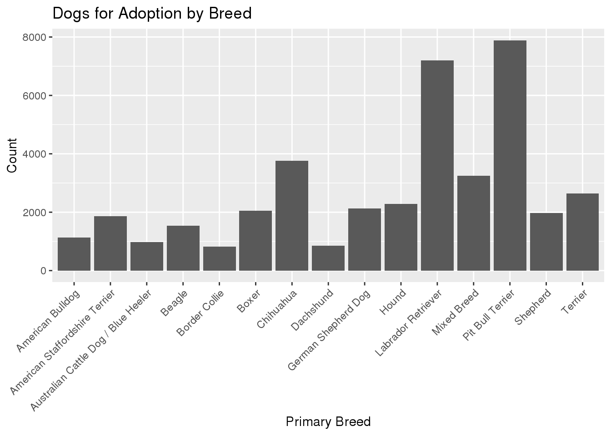

Using the data from TidyTuesdays website, I am going to look at dog descriptions, exporting and importing of dgos, and dogs that have traveled. The first data set contains 58,180 observations and 36 variables. The second data set contains 90 observations and 5 variables. The third data set contains 6,194 observations and 8 variables. From these data sets I can see which dogs are better able to perform tricks, which dogs travel more than other dogs, whether these certain dogs are mixed, or purebred, their colors, sex, size, coat length, and many others. Using this data you can find out quite a bit about certain dog species.
Below is a preview of the data sets I am using for this analysis
## Observations: 58,180
## Variables: 36
## $ id <int> 46042150, 46042002, 46040898, 46039877, 46039306, 460…
## $ org_id <fct> NV163, NV163, NV99, NV202, NV184, NV184, NV184, NV184…
## $ url <fct> https://www.petfinder.com/dog/harley-46042150/nv/las-…
## $ species <fct> Dog, Dog, Dog, Dog, Dog, Dog, Dog, Dog, Dog, Dog, Dog…
## $ breed_primary <fct> American Staffordshire Terrier, Pit Bull Terrier, She…
## $ breed_secondary <fct> Mixed Breed, Mixed Breed, NA, NA, NA, Beagle, Chihuah…
## $ breed_mixed <lgl> TRUE, TRUE, FALSE, FALSE, FALSE, TRUE, TRUE, TRUE, TR…
## $ breed_unknown <lgl> FALSE, FALSE, FALSE, FALSE, FALSE, FALSE, FALSE, FALS…
## $ color_primary <fct> "White / Cream", "Brown / Chocolate", "Brindle", NA, …
## $ color_secondary <fct> Yellow / Tan / Blond / Fawn, White / Cream, NA, NA, N…
## $ color_tertiary <fct> NA, NA, NA, NA, NA, NA, NA, NA, NA, NA, NA, NA, NA, N…
## $ age <fct> Senior, Adult, Adult, Baby, Young, Baby, Baby, Baby, …
## $ sex <fct> Male, Male, Male, Female, Male, Male, Female, Male, F…
## $ size <fct> Medium, Large, Large, Large, Small, Medium, Small, Me…
## $ coat <fct> Short, Short, Short, NA, Long, Short, Short, Medium, …
## $ fixed <lgl> TRUE, TRUE, TRUE, FALSE, TRUE, TRUE, TRUE, TRUE, TRUE…
## $ house_trained <lgl> TRUE, TRUE, FALSE, FALSE, FALSE, FALSE, FALSE, FALSE,…
## $ declawed <lgl> NA, NA, NA, NA, NA, NA, NA, NA, NA, NA, NA, NA, NA, N…
## $ special_needs <lgl> FALSE, FALSE, FALSE, FALSE, FALSE, FALSE, FALSE, FALS…
## $ shots_current <lgl> TRUE, TRUE, TRUE, FALSE, TRUE, TRUE, TRUE, TRUE, TRUE…
## $ env_children <lgl> NA, NA, NA, NA, TRUE, TRUE, TRUE, TRUE, TRUE, TRUE, T…
## $ env_dogs <lgl> NA, NA, NA, NA, TRUE, TRUE, TRUE, TRUE, TRUE, TRUE, T…
## $ env_cats <lgl> NA, NA, NA, NA, TRUE, TRUE, TRUE, TRUE, TRUE, TRUE, T…
## $ name <fct> HARLEY, BIGGIE, Ziggy, Gypsy, Theo, Oliver, Macadamia…
## $ tags <fct> NA, NA, NA, NA, NA, NA, NA, NA, NA, NA, NA, NA, NA, N…
## $ photo <fct> NA, NA, NA, NA, NA, NA, NA, NA, NA, NA, NA, NA, NA, N…
## $ status <fct> adoptable, adoptable, adoptable, adoptable, adoptable…
## $ posted <fct> 2019-09-20T16:37:59+0000, 2019-09-20T16:24:57+0000, 2…
## $ contact_city <fct> Las Vegas, Las Vegas, Mesquite, Pahrump, Henderson, H…
## $ contact_state <fct> NV, NV, NV, NV, NV, NV, NV, NV, NV, NV, NV, NV, NV, N…
## $ contact_zip <fct> 89147, 89147, 89027, 89048, 89052, 89052, 89052, 8905…
## $ contact_country <fct> US, US, US, US, US, US, US, US, US, US, US, US, US, U…
## $ stateQ <fct> 89009, 89009, 89009, 89009, 89009, 89009, 89009, 8900…
## $ accessed <fct> 2019-09-20, 2019-09-20, 2019-09-20, 2019-09-20, 2019-…
## $ type <fct> Dog, Dog, Dog, Dog, Dog, Dog, Dog, Dog, Dog, Dog, Dog…
## $ description <fct> "Harley is not sure how he wound up at shelter in his…## Observations: 90
## Variables: 5
## $ location <fct> Texas, Alabama, North Carolina, South Carolina, Georgia, Pue…
## $ exported <int> 635, 268, 158, 139, 137, 131, 130, 76, 66, 57, 55, 54, 53, 5…
## $ imported <int> NA, 2, 14, 12, 19, NA, 3, NA, 20, 4, NA, NA, NA, NA, 32, 1, …
## $ total <int> 566, 1428, 2627, 1618, 3479, NA, 1664, NA, 1769, 1123, 510, …
## $ inUS <lgl> TRUE, TRUE, TRUE, TRUE, TRUE, FALSE, TRUE, FALSE, TRUE, TRUE…## Observations: 6,194
## Variables: 8
## $ id <int> 44520267, 44698509, 45983838, 44475904, 43877389, 43082…
## $ contact_city <fct> Anoka, Groveland, Adamstown, Saint Cloud, Pueblo, Manch…
## $ contact_state <fct> MN, FL, MD, MN, CO, CT, OH, OH, AL, AL, AL, AL, AL, AL,…
## $ description <fct> "Boris is a handsome mini schnauzer who made his long t…
## $ found <fct> Arkansas, Abacos, Adam, Adaptil, Afghanistan, Afghanist…
## $ manual <fct> NA, Bahamas, Maryland, NA, NA, NA, Ohio, Ohio, NA, NA, …
## $ remove <lgl> NA, NA, NA, TRUE, NA, NA, NA, NA, NA, NA, NA, NA, NA, N…
## $ still_there <lgl> NA, NA, NA, NA, NA, NA, NA, NA, NA, NA, NA, NA, NA, NA,…Which state exports the most dogs? Which state imports the most dogs?
## # A tibble: 1 x 2
## location max_exported
## <fct> <dbl>
## 1 Texas 635From this data you can see that the state in which the most dogs are exported, or in other words, put up from adoption is Texas.
## # A tibble: 1 x 2
## location max_imported
## <fct> <dbl>
## 1 New York 390From this data you can see that the state that imports or adopts the most dogs is New York. # Question 2: Where are dogs found the most? Which states lose the most dogs?
## # A tibble: 5 x 2
## found count
## <fct> <int>
## 1 Texas 607
## 2 Alabama 322
## 3 VA 267
## 4 NC 189
## 5 MD 164This data shows us that the top 5 states in which lost dogs are found is, Texas, Alabama, Virginia, North Carolina, Maryland
## # A tibble: 5 x 2
## contact_state count
## <fct> <int>
## 1 VA 1025
## 2 WA 634
## 3 NJ 552
## 4 NY 490
## 5 MD 379From this data set we can see that the sates which the lose the most dogs are Virginia, Washington, New Jersey, New York, and Maryland
What proportion of dogs are pure-bred? Which coat types are more common, and which coat types are less common?
## # A tibble: 2 x 4
## # Groups: breed_mixed, count [2]
## breed_mixed count pure_bred percent_pure
## <lgl> <int> <int> <dbl>
## 1 FALSE 58180 16589 28.5
## 2 TRUE 58180 41591 71.5
What proportion of dogs are seniors? What primary breed is put up for adoption the most?
## # A tibble: 4 x 2
## age percentage
## <fct> <dbl>
## 1 Adult 48.0
## 2 Baby 16.2
## 3 Senior 7.96
## 4 Young 27.8